- Sie kommen von MacDiveWelche Datei Sie exportieren und wie Sie umziehen, ohne etwas zu verlieren.
- Von einem Computer herunterladenShearwater und andere Bluetooth-Computer oder ein Kabel am Mac.
- Garmin Descent.fit-Dateien von der Uhr oder aus Garmin Connect importieren.
Funktioniert etwas nicht? Siehe Problemlösung. Thermocline ist ein Logbuch: Es zeigt, was Ihr Tauchcomputer aufgezeichnet hat, und berechnet niemals Dekompression.
Die App bekommen
Thermocline ist nur für Apple-Geräte: iPhone, iPad, Mac und Apple Watch. Während der Beta wird es über Apples TestFlight-App installiert.
| Aufgabe | iPhone und iPad | Mac |
|---|---|---|
| Bei der Beta mitmachen | Bei der Beta mitmachen: ein Link für iPhone, iPad, Mac und Apple Watch. Öffnen Sie ihn auf jedem Gerät und installieren Sie aus TestFlight. Die Apple Watch-App kommt mit der iPhone-App. Jedes Gerät nutzt über iCloud dasselbe Logbuch. | |
| Vor dem 18. November 2026 der iPhone-Beta beigetreten | Diese App ist umgezogen. Siehe Umzug von der alten iPhone-App. | |
| Auf dem neuesten Stand bleiben | Wenn TestFlight einen neuen Build anbietet, aktualisieren Sie jedes Gerät, das Sie nutzen. Ein älterer Build sendet keine Änderungen mehr, bis er aktualisiert ist, und weist darauf hin. Nichts geht verloren. | |
Erster Start und die Tour
Beim ersten Start fragt die App nach Ihrem Namen, Ihren Einheiten und woher Ihre Tauchgänge kommen. Einheiten werden metrisch gespeichert; eine Änderung ändert nur die Anzeige.
| Aufgabe | iPhone und iPad | Mac |
|---|---|---|
| Einstellungen | Der Tab Profil | Thermocline → Einstellungen |
| Die Tour | Profil → Hilfe → Tour zeigen | Hilfe → Tour starten |
Die Tour führt anhand eines Beispiel-Logbuchs durch jeden Bildschirm, nicht anhand Ihres eigenen.
Die Bildschirmfotos auf dieser Seite zeigen das Beispiel-Logbuch aus der Tour: Die Tauchgänge und Tauchplätze sind erfunden. Tippen Sie auf eines, um es in voller Größe zu sehen.

Logbuch mitbringen
Thermocline liest MacDive (seinen Ordner, XML oder UDDF), eine Shearwater-Cloud-Datenbank, Garmin-.fit-Dateien, UDDF aus jedem Logbuch und CSV. Sie wählen, welche Tauchgänge hinzukommen, und alles, was die App nicht lesen kann, wird aufgelistet, nie stillschweigend weggelassen.
| Aufgabe | iPhone und iPad | Mac |
|---|---|---|
| Eine Datei importieren | Profil → Ihre Daten → Logbuchdatei importieren, dann wählen Sie sie in iCloud Drive oder Dateien aus. | Der Importbefehl im Menü „Ablage“ (⇧⌘I). |
| Garmin-.fit-Dateien | Wählen Sie mehrere auf einmal. | Wählen Sie mehrere oder einen ganzen Ordner. |
| Der MacDive-Ordner, mit Fotos | Nur auf dem Mac. Holen Sie die Fotos später mit der Mac-App herüber. | Ablage → Aus MacDive importieren … und wählen Sie den MacDive-Ordner: Tauchgänge, Tauchfotos und Kartenfotos. Die Dateien von MacDive werden nicht verändert. |
| Tauchgänge auswählen | Entfernen Sie das Häkchen bei allen, die Sie nicht möchten, dann Importieren. | |
| Einen Import widerrufen | Der Wiederherstellungspunkt Vor einem Import, gesichert vor jedem Import von mehr als einem Tauchgang. | Import widerrufen … im Importbericht oder derselbe Wiederherstellungspunkt. |
Wenn der Import fertig ist, zeigt ein Bericht, wie viele Tauchgänge hinzugefügt wurden, welche Einträge nicht importiert wurden und warum, und was zu prüfen ist. Tauchgänge, deren Datei kein Gas enthielt, warten unter Zu bestätigen.
Welche MacDive-Datei Sie verwenden sollten
MacDive kann Ihnen sein XML, sein UDDF oder (auf dem Mac) seinen ganzen Ordner geben. Sie enthalten nicht dasselbe:
| Was enthalten ist | MacDive XML | MacDive UDDF | MacDive-Ordner (Mac) |
|---|---|---|---|
| Tauchgänge, Tauchplätze, Buddys, Gase | Ja | Ja | Ja |
| Flaschengrößen | Ja | Nein: Seine Größen sind keine Wasservolumen, daher bleiben sie leer | Ja |
| Tiefenprofile | Jeder Tauchgang | Jeder Tauchgang | Alle außer Tauchgängen, die MacDive auf iPhone oder iPad heruntergeladen hat und verschlüsselt speichert |
| Nullzeit und ppO₂ des Computers über den Tauchgang | Ja | Nein | Ja, außer bei diesen verschlüsselten Tauchgängen |
| CNS des Computers | Ja | Nein | Ja |
| Ausrüstung, Tags und Tauchgangsarten | Ja | Nein | Ja |
| Tauch- und Kartenfotos | Nein | Nein | Ja |
| Aufgabe | iPhone und iPad | Mac |
|---|---|---|
| Bester Weg | Exportieren Sie Ihre Tauchgänge aus MacDive als XML, sichern Sie die Datei in iCloud Drive und importieren Sie sie. | Importieren Sie den MacDive-Ordner, dann das XML darüber. Das XML ergänzt Profile, Nullzeit und ppO₂ der verschlüsselten Tauchgänge. |
| UDDF schon importiert | Importieren Sie auch das XML. Tauchgänge, die schon in Ihrem Logbuch sind, werden zugeordnet, nicht noch einmal hinzugefügt, und nur Fehlendes wird ergänzt, auch Flaschengrößen. Nichts, was Sie eingegeben oder korrigiert haben, wird geändert. | |
Garmin-Descent-Uhren
Eine Garmin Descent speichert eine .fit-Datei pro Tauchgang. Es gibt zwei Wege, sie zu bekommen:
- Von der Uhr: Schließen Sie sie mit ihrem Kabel an den Mac an und öffnen Sie den Ordner GARMIN → Activity. Auf dem Mac können Sie den ganzen GARMIN-Ordner importieren; Dateien, die keine Tauchgänge sind, etwa Läufe und Einstellungen, werden übersprungen.
- Aus Garmin Connect: Öffnen Sie den Tauchgang und wählen Sie Original exportieren. Das ergibt eine .zip-Datei: Entpacken Sie sie zuerst und importieren Sie dann die .fit-Datei darin.
Positionen kommen vom GPS der Uhr. Bei einem Strömungstauchgang speichert die Uhr den Ort, an dem Sie aufgetaucht sind, als Start; der Import findet heraus, wo Sie tatsächlich eingestiegen sind, sodass der Tauchgang diesem Tauchplatz zugeordnet wird. Weitere Wracks, an denen Sie vorbeigekommen sind, tragen Sie in die Notizen ein.

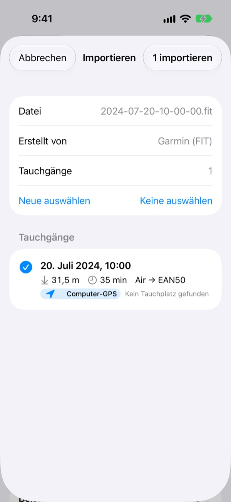
Tauchgänge vom Computer herunterladen
Versetzen Sie den Tauchcomputer zuerst in seinen Bluetooth-Modus. Bei einem Shearwater: Menu → Bluetooth. Er bleibt etwa zwei Minuten darin. Nur Tauchgänge, die neuer als Ihr letzter Download sind, werden geholt.
| Aufgabe | iPhone und iPad | Mac |
|---|---|---|
| Öffnen | Logbuch → Tauchgänge herunterladen | Ablage → Vom Tauchcomputer herunterladen … (⇧⌘D) |
| Verbinden | Bluetooth. Wählen Sie Ihren Computer unter In der Nähe; beim ersten Mal geben Sie die PIN ein, die auf seinem Display steht. | Wählen Sie Bluetooth oder USB-Kabel. Für ein Kabel wählen Sie das Modell Ihres Computers und seinen Port und folgen Bevor Sie beginnen. |
| Abschließen | Entfernen Sie das Häkchen bei jedem Tauchgang, den Sie nicht möchten, dann Behalten. Tauchgänge ohne Häkchen bleiben auf dem Computer und werden beim nächsten Mal wieder angeboten. | Herunterladen. |
Die Frage nach der Uhr. Beim ersten Download von jedem Computer fragt die App: Auf welche Zone ist die Uhr des Computers eingestellt? Die meisten Computer zeichnen Ortszeit ohne Zeitzone auf, daher bleiben so Ihre Tauchzeiten auf Reisen richtig. Die Antwort wird für diesen Computer gemerkt.
Nach der Auswahl der Tauchgänge können Sie sie einzeln durchgehen, um Tauchplatz und Gase festzulegen, oder Später abschließen: Dann warten sie unter Zu bestätigen.
Einen Tauchgang gelöscht und Sie möchten ihn zurück? Schalten Sie Jeden Tauchgang auf dem Computer herunterladen ein. Das dauert länger; Tauchgänge, die schon in Ihrem Logbuch sind, werden übersprungen.

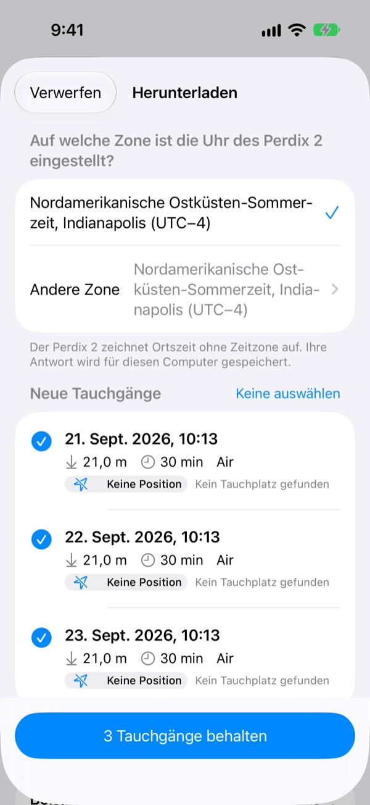
Shearwater Predator und Petrel 1
Diese nutzen ein älteres Bluetooth (Bluetooth Classic), das iPhones, iPads und Macs nicht erreichen. Laden Sie sie mit Shearwater Cloud unter Windows oder Android herunter und importieren Sie dann dessen Export oder eine UDDF-Datei in Thermocline.
Unterstützte Computer
Thermocline lädt mit libdivecomputer herunter, der Open-Source-Bibliothek, die viele Logbücher gemeinsam nutzen. Sie kennt mehrere hundert Modelle der meisten Hersteller. Um Ihres zu sehen, öffnen Sie den Download-Bildschirm und wählen Unterstützte Computer; bei jedem steht, ob er auf iPhone und iPad funktioniert oder den Mac braucht.
| Verbindung | Wo es funktioniert | Bisher ausprobiert |
|---|---|---|
| Bluetooth LE | iPhone, iPad und Mac | Shearwater Perdix und Perdix 2. Andere Modelle sollten funktionieren: Sagen Sie uns Bescheid. |
| USB- oder serielles Kabel | Nur auf dem Mac | Gebaut, noch nicht mit echter Hardware ausprobiert. |
| Bluetooth Classic (Predator, Petrel 1 und andere ältere Modelle) | Nicht auf iPhone, iPad oder Mac: Tauchgänge importieren (wie) | — |
| Garmin Descent (.fit-Dateien) | Import auf iPhone, iPad und Mac (wie) | Descent-Tauchgänge, auch Strömungstauchgänge. |
Sie haben einen Computer, den wir noch nicht ausprobiert haben? Helfen Sie uns, ihn zu testen.
Tauchplatz und Gase bestätigen
Tauchgänge, denen noch ein Tauchplatz oder bestätigte Gase fehlen, warten unter Zu bestätigen. Nichts hindert sie am Speichern; ergänzen Sie sie, wann Sie möchten.
| Aufgabe | iPhone und iPad | Mac |
|---|---|---|
| Finden | Oben im Logbuch, unter Zu bestätigen. | Gehe zu → Zu bestätigen (⌘2) |
| Bestätigen | Öffnen Sie einen, dann Tauchplatz wählen und tippen Sie auf Ja, diese Gase stimmen (oder Gas korrigieren …). | Das Banner bei jedem Tauchgang bietet Tauchplatz und Gase bestätigen …, Tauchplatz wählen … oder Gase bestätigen … an. |
Thermocline schlägt den Tauchplatz anhand der Position des Tauchgangs vor: zuerst Ihre eigenen Tauchplätze, dann die eingebauten Listen mit mehr als 76.000 Tauchplätzen und Wracks, die offline funktionieren.

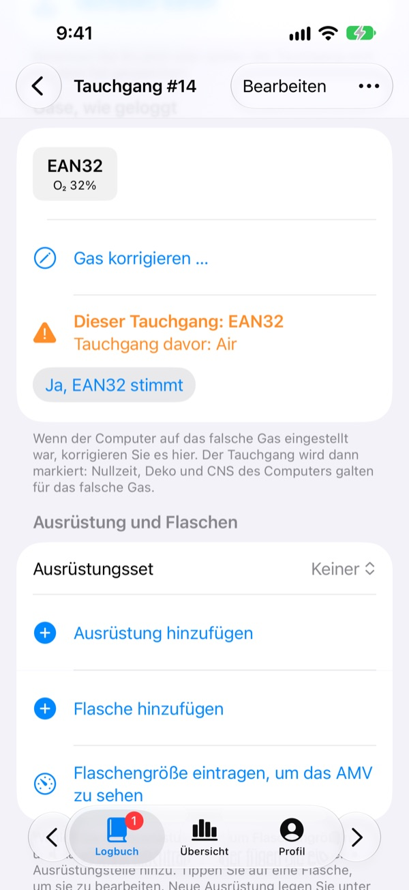
Einen Tauchgang lesen
| Aufgabe | iPhone und iPad | Mac |
|---|---|---|
| Jeden Moment ablesen | Ziehen Sie über das Diagramm. | Zeigen Sie auf das Diagramm. |
| Einen Tauchgang von Hand loggen | Logbuch → Von Hand loggen | ⌘N |
| Einen Tauchgang löschen | Im Logbuch nach links darüber wischen. Für mehrere tippen Sie auf Auswählen. | ⌘⌫ oder Tauchgang → Tauchgang löschen …. Mit ⌘-Klick wählen Sie mehrere. |
- Löschen: Vorher wird ein Wiederherstellungspunkt gesichert, ein gelöschter Tauchgang lässt sich also zurückholen (siehe Export, Wiederherstellungspunkte und Löschen).
- Sicherheitswerte stehen in einer festen Leiste oben bei jedem Tauchgang, immer an derselben Stelle.
- Das Profil: Chips unter dem Diagramm blenden Flasche, ppO₂, Nullzeit, AMV, Temp., CNS und Aufstieg ein oder aus, als Leisten (Gestapelt) oder in einer Ansicht (Überlagert). Nur was der Tauchgang aufgezeichnet hat, bekommt einen Chip. Die Nullzeit ist die des Computers und endet während der Deko, wo das rote Band die Stopps zeigt. Auf einem schmalen iPhone bleiben die Chips in einer Zeile und lassen sich seitlich scrollen. Auf der Startseite ausprobieren.
- Kreislaufgeräte: Bei jedem Computer und jeder Datei, die sie aufzeichnen, zeigt die ppO₂-Leiste den Setpoint mit dem per Voting ermittelten ppO₂ (und jede Zelle, wo aufgezeichnet), und die Anzeige gibt den Setpoint in diesem Moment an. Ein Wechsel vom Diluent auf ein anderes Gas wird als Bailout gekennzeichnet.
- Gasverbrauch: Tippen oder klicken Sie auf Wie? neben dem AMV-Wert, um jeden Eingabewert zu sehen: die Flasche, ihr Wasservolumen, Drücke, Temperatur und die Realgas-Korrektur.
- Bearbeiten: Bearbeiten Sie jeden Tauchgang. Eine Korrektur behält den ursprünglichen Messwert des Computers.
- Blei: Das erste Tippen auf + setzt Kein Blei, für einen Tauchgang ohne Blei. Tippen Sie von dort auf −, um es zu löschen.
- Links in Notizen: Weblinks in den Notizen eines Tauchgangs lassen sich antippen oder anklicken. Wenn Sie mit dem Tippen fertig sind, tippen Sie auf Fertig über der Tastatur: Dann erscheinen die Links, und ein YouTube- oder Vimeo-Link bekommt unter den Notizen eine Taste … zu den Videolinks hinzufügen. Um wieder in die Notizen zu schreiben, wählen Sie Notizen bearbeiten.


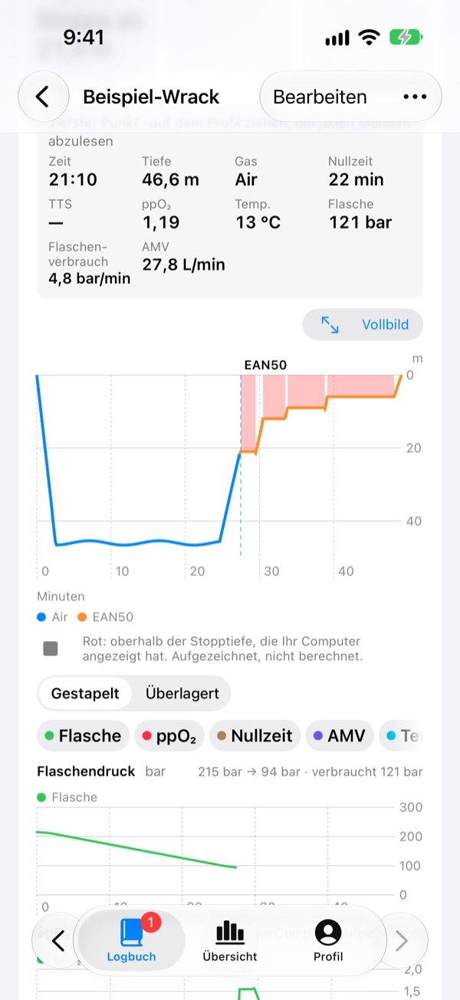


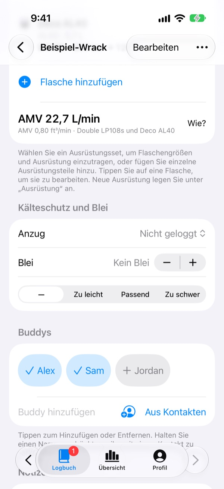

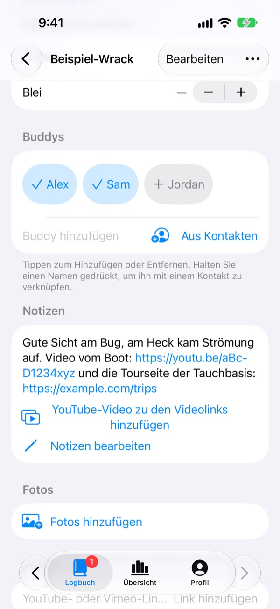

Tauchplätze, Positionen und die Apple Watch
| Aufgabe | iPhone und iPad | Mac |
|---|---|---|
| Einen Tauchplatz hinzufügen | Profil → Tauchplätze, dann die Taste zum Hinzufügen: Tauchplatz suchen oder benennen oder Stelle hier markieren (GPS). | Gehe zu → Tauchplätze (⌘4), dann Tauchplatz hinzufügen … |
| Alle gelisteten Tauchplätze sehen | Profil → Tauchplätze → Karte, dann die Globus-Taste, oder ganz herauszoomen. Wracks sind orange, Riffe und Tauchplätze blau, Ihre eigenen Tauchplätze rote Fähnchen. | Tauchplätze, dann Globus anzeigen in der Symbolleiste, oder ganz herauszoomen. |
| Eine Position finden | Ein Tauchplatz ohne Position bietet Position suchen an: Prüfen Sie den Vorschlag auf der Karte, geben Sie Koordinaten ein oder setzen Sie eine Stecknadel. | Positionen suchen … geht jeden Tauchplatz ohne Position nacheinander durch. |
Apple Watch: Markieren Sie an der Oberfläche eine Stelle, und sie wartet auf Ihrem iPhone unter Zu bestätigen. Siehe Apple Watch.
Tauchplatzpositionen sind zum Loggen da, nicht zur Navigation.

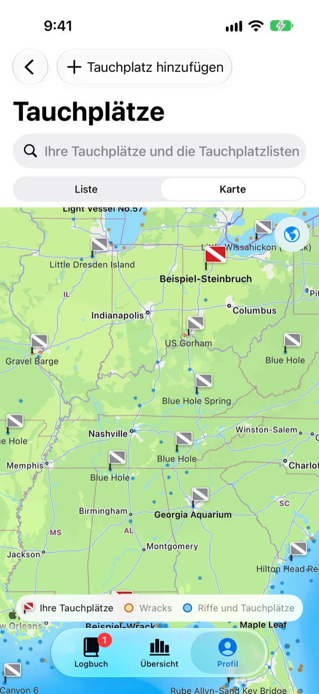
Apple Watch
Die Watch-App tut eine Sache: Sie markiert, wo Sie sich an der Oberfläche befinden, damit sich der Tauchplatz eines Tauchgangs leicht loggen lässt. Sie zeichnet keine Tauchgänge auf; die kommen von Ihrem Tauchcomputer. Sie benötigt watchOS 11 oder neuer und ein iPhone mit Thermocline.
| Aufgabe | Apple Watch | iPhone |
|---|---|---|
| Installieren | Sie kommt mit der iPhone-App. Wenn sie nicht auf der Uhr ist, öffnen Sie die Watch-App auf Ihrem iPhone, suchen Thermocline unter Verfügbare Apps und tippen auf Installieren. Erlauben Sie beim ersten Mal den Standortzugriff für Thermocline auf der Uhr. | |
| Eine Stelle markieren | Öffnen Sie Thermocline an der Oberfläche über dem Tauchplatz. Warten Sie auf Guter Fix und tippen Sie dann auf Stelle markieren. Die Uhr tippt an Ihr Handgelenk, wenn sie gesichert ist. | Die Stelle kommt von selbst an. Wenn das iPhone außer Reichweite ist, wird sie gesendet, sobald beide wieder zusammen sind. |
| Benennen | Optional. Tippen Sie nach dem Markieren oder später unter Markierungen auf Namen hinzufügen und sprechen, kritzeln oder tippen Sie ihn, zum Beispiel „Bug des Wracks“. Er wird gesichert, wenn Sie fertig sind. | Der Name wird als Name des neuen Tauchplatzes angeboten. Sie können ihn verwenden oder einen anderen Tauchplatz wählen. |
| Bestätigen | Auf der Uhr ist nichts zu tun. | Logbuch → Zu bestätigen. Das iPhone schlägt die Stelle nach, wenn es online ist, schlägt den nächstgelegenen bekannten Tauchplatz vor und zeigt den Tauchgang, zu dem sie am wahrscheinlichsten gehört. Bestätigen oder verwerfen Sie sie. |
| Prüfen, ob sie gesendet wurde | Markierungen zeigt jede mit An iPhone gesendet oder Wartet auf Senden an iPhone und eine Karte. Eine Stelle verlässt die Uhr, sobald sie auf dem iPhone bestätigt oder verworfen wurde. | Nach dem Bestätigen wird der Tauchplatz wie jeder andere mit Ihren anderen Geräten synchronisiert. |

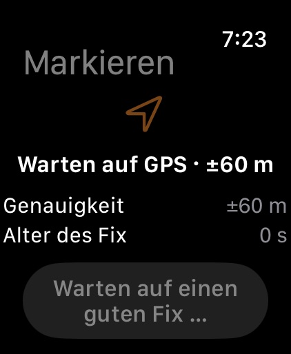

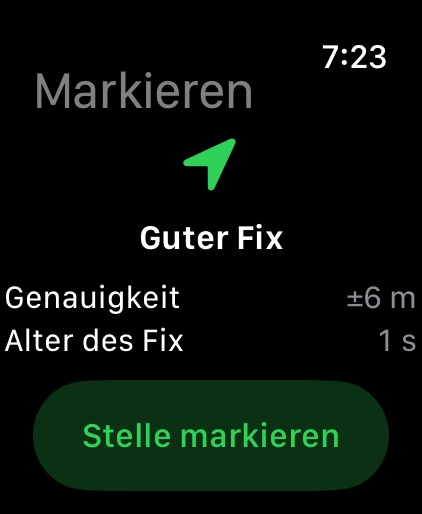

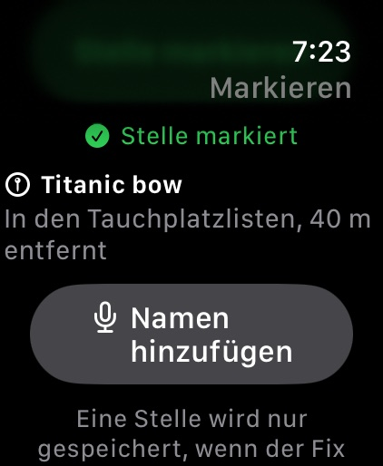

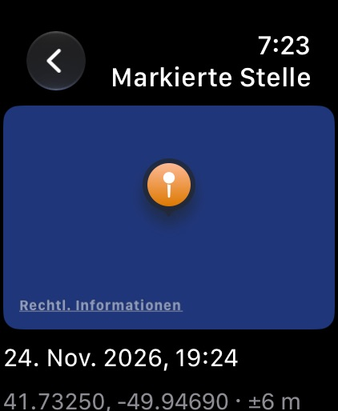
Die Uhr sichert eine Stelle nur aus einem Fix mit einer Genauigkeit von ±30 m, der weniger als 30 Sekunden alt ist, und sie ignoriert eine alte zwischengespeicherte Position. Markieren Sie an der Oberfläche, nicht unter Wasser.
Tauchplatzpositionen sind zum Loggen da, nicht zur Navigation.
Ausrüstung und Flaschen
| Aufgabe | iPhone und iPad | Mac |
|---|---|---|
| Ausrüstung öffnen | Profil → Ausrüstung | Gehe zu → Ausrüstung |
- Bei einer Flasche öffnet Modell den Flaschenkatalog: Suchen Sie nach Hersteller oder Modell (zum Beispiel „PST LP104“), um die veröffentlichten Größen einzutragen, oder geben Sie Ihre eigenen Werte ein.
- Haken Sie Doppelgerät (verbundenes Paar) für ein Doppelgerät an.
- Eine Stahlflasche mit eingeschlagenem +: Schalten Sie Plus-Kennzeichnung ein, solange die letzte Druckprüfung das + bestätigt hat. Sie wird zum Beispiel als 2400+ angezeigt. Dieser Schalter erscheint, wenn Flaschengrößen in Kubikfuß angezeigt werden.
- Die Flaschen jedes Tauchgangs stehen im Gasbereich des Tauchgangs (Flasche hinzufügen, Ausrüstungsset).
Tauchgänge zusammenführen und verbinden
- Zusammenführen ist für einen Tauchgang, den zwei Computer aufgezeichnet haben. Beide Aufzeichnungen bleiben erhalten, und Sie können im Diagramm zwischen ihnen wechseln.
- Verbinden ist für einen Tauchgang, der durch kurzes Auftauchen in zwei Teile getrennt wurde.
- Thermocline tut nie eines davon von sich aus. Wenn es ein wahrscheinliches Paar entdeckt, bietet ein Banner oben im Logbuch an, sie zu prüfen.
| Aufgabe | iPhone und iPad | Mac |
|---|---|---|
| Selbst machen | Tippen Sie auf Auswählen, wählen Sie zwei Tauchgänge, dann Zusammenführen oder Verbinden. | Wählen Sie zwei Tauchgänge aus und klicken Sie mit der rechten Maustaste: Diese Tauchgänge zusammenführen … oder Diese Tauchgänge verbinden … |
| Es sich anders überlegt | Sofort Widerrufen oder jederzeit beim Tauchgang Diese Tauchgänge trennen. | |
Fotos und Videolinks
- Fotos hinzufügen bei einem Tauchgang kopiert sie aus Ihrer Mediathek ins Logbuch.
- Um iCloud-Speicher zu sparen, schalten Sie auf jedem Gerät Synchronisierung → iCloud-Speicher bei Tauchfotos sparen ein. Fotos werden dann mit iCloud-Fotos verknüpft statt kopiert, und Videos aus Ihrer Mediathek können hinzugefügt werden. Thermocline fragt nur dann nach Zugriff auf Fotos, wenn Sie dies einschalten.
- Videolinks: Fügen Sie unter den Fotos eines Tauchgangs einen YouTube- oder Vimeo-Link ein. Nur der Link wird gespeichert. Ein Link, der schon in den Notizen steht, kann von dort hinzugefügt werden (siehe Einen Tauchgang lesen).
- Dasselbe Video bei mehreren Tauchgängen: Wählen Sie die Tauchgänge aus (auf dem iPhone zuerst auf Auswählen tippen), wählen Sie … Tauchgänge bearbeiten … und fügen Sie den Link unter Videolinks hinzu. Er wird jedem ausgewählten Tauchgang hinzugefügt, und Links, die sie schon haben, bleiben erhalten.
Übersicht und Gasverbrauch
Der Tab Übersicht (Übersicht in der Seitenleiste des Mac) zählt Ihr Logbuch aus: Tauchgänge pro Jahr und pro Monat, Tiefen, Gase, Rekorde, wo Sie tauchen und Ihren meistgenutzten Tauchplatz und Buddy. Wählen Sie oben einen Zeitraum, etwa ein Jahr, und tippen Sie auf eine Zahl oder einen Balken, um die Tauchgänge dahinter zu sehen.
- Gasverbrauch zeigt Ihr AMV über jeden Tauchgang im Zeitraum, der eine Flaschengröße sowie Anfangs- und Enddruck hat, gewichtet nach Zeit und Tiefe. Tippen Sie darauf, um zu sehen, welche Tauchgänge gezählt wurden.
- Manche importierten Tauchgänge haben keine Flaschengröße, daher kann Gasverbrauch anfangs leer sein (siehe Welche MacDive-Datei Sie verwenden sollten). Legen Sie die Flaschen Ihrer Tauchgänge fest, in Ausrüstung oder bei jedem Tauchgang, und es füllt sich.

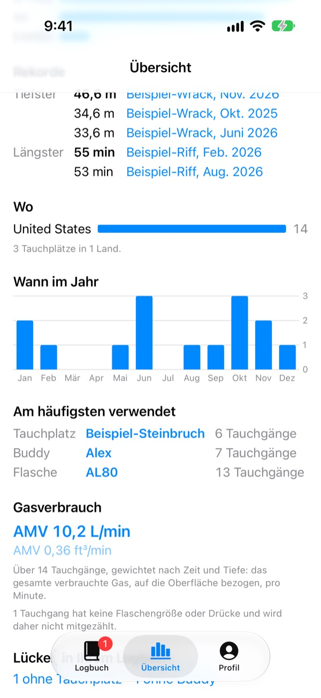
Mit iCloud synchronisieren
| Aufgabe | iPhone und iPad | Mac |
|---|---|---|
| Synchronisierung einschalten | Profil → Synchronisierung | Thermocline → Einstellungen → Synchronisierung |
Jedes Gerät, das mit demselben Apple Account angemeldet ist, teilt dann ein Logbuch, gespeichert in Ihrer eigenen privaten iCloud. Änderungen, die offline gemacht werden, warten auf dem Gerät und werden gesendet, wenn es wieder online ist.
Der Bereich Synchronisierung zeigt den Status, alles, was Wartet auf Senden, und ob dieses Gerät und Ihre anderen übereinstimmen. Jetzt synchronisieren prüft sofort.

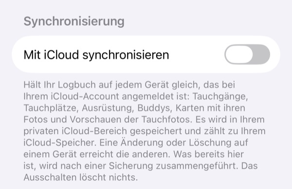
Export, Wiederherstellungspunkte und Löschen
| Aufgabe | iPhone und iPad | Mac |
|---|---|---|
| Exportieren | Profil → Ihre Daten | Das Menü „Ablage“ |
| Wiederherstellungspunkte | Profil → Ihre Daten → Wiederherstellungspunkte | Einstellungen → Ihre Daten → Wiederherstellungspunkte |
- Exportieren: UDDF ist der vollständige Export und Ihr Weg zu jedem anderen Logbuch. Außerdem verfügbar: eine Tabelle (CSV), MacDive XML, Lesezeichen für die Höhlenvermessung (CSV) und eine Erfahrungsübersicht (Text) für Kursvoraussetzungen.
- Wiederherstellungspunkte: Einer wird gesichert vor dem Einschalten der Synchronisierung, vor einem großen Import, einer Zusammenführung, einer Verbindung, einem Löschen des Logbuchs und bevor irgendetwas gelöscht wird. Beim Wiederherstellen wird Ihr aktuelles Logbuch zuerst als Wiederherstellungspunkt gesichert, sodass Sie es rückgängig machen können.
- Löschen: Logbuch löschen … bietet an, vorher zu exportieren. Bei eingeschalteter Synchronisierung folgen Ihre anderen Geräte.

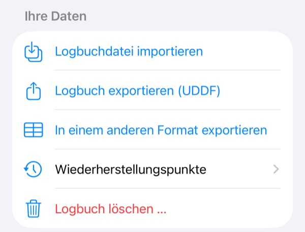
Bedienungshilfen
Thermocline beachtet die Einstellungen unter „Bedienungshilfen“ auf Ihrem Gerät.
- VoiceOver liest jeden Balken der Übersicht als ein Element vor, mit seiner Anzahl. Öffnen Sie ihn, um die gezählten Tauchgänge zu sehen.
- Größerer Text: Die Übersicht bricht um, statt abgeschnitten zu werden, bis zu den größten Schriftgrößen.
- Ohne Farben differenzieren: Wracks sind auf der Karte Rauten, nicht nur orange.
- Bewegung reduzieren: Die Karte springt zu einem Tauchplatz, statt hinzufliegen, und Meldungen werden eingeblendet, statt hereinzugleiten.
Kommen Sie nicht weiter?
Siehe Problemlösung oder senden Sie Feedback aus TestFlight oder an brian@616labs.net.